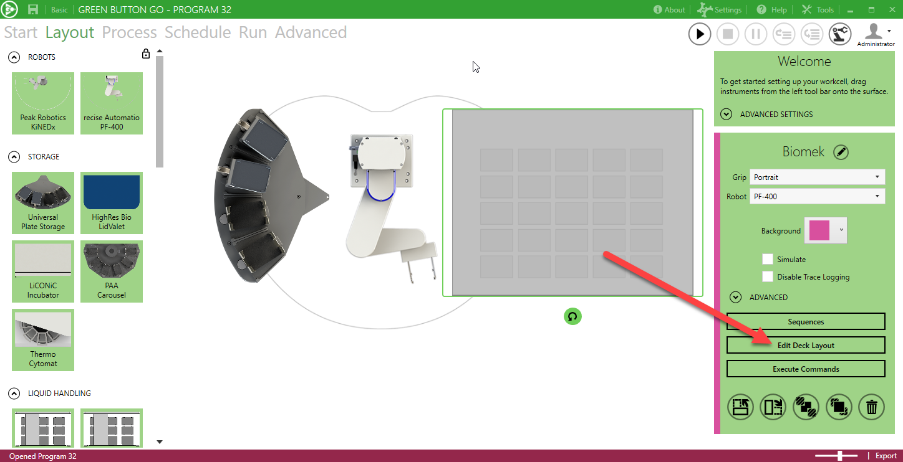
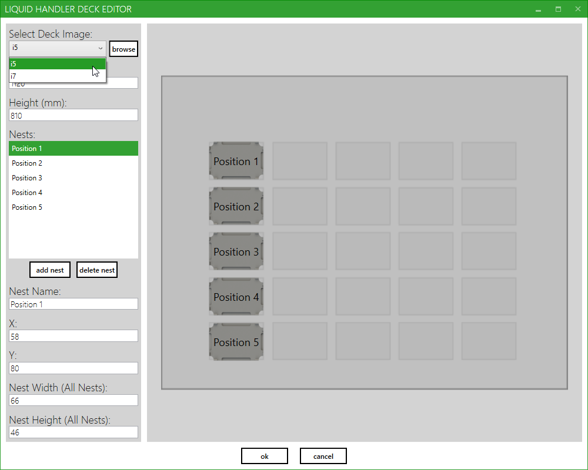
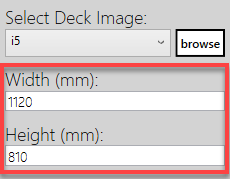
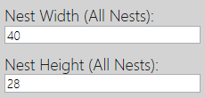
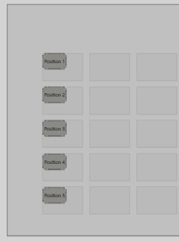
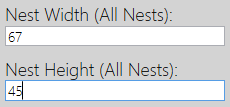
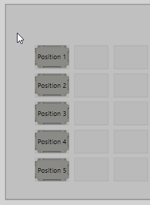
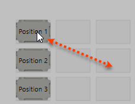
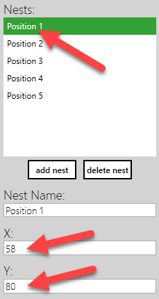
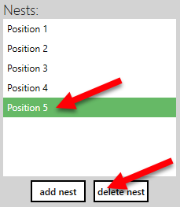

After adding the liquid handler to the layout, select it and click the 'Edit Deck Layout' button in the instrument properties.

You can select one of the predefined deck images from the 'Select Deck Image' drop down box. To select a custom image, click on the 'Browse' button.

To change the deck size, enter the appropriate sizes into the 'Width (mm)' and 'Height (mm)' text boxes. This will scale the size of the image on the Layout tab.

You will also probably need to scale the nest size to match. This can be done by adjusting the values in the 'Nest Width (All Nests)' and 'Nest Height (Alll Nests)' text boxes. This will scale the nests to match the deck size.




Nests can be moved around on the deck by left clicking on the nest and dragging it to the desired location. A nest can also be moved by selecting the nest from the list and updating the values in the 'X' and 'Y' coordinate text boxes. A nest can be renamed by editing the value in the 'Nest Name' text box.


Nests can be added by clicking the 'Add Nest' button. To delete a nest, select it from the list and click on the 'Delete Nest' button.

Once you have completed the deck edit, click the 'ok' button to save your changes, or 'cancel' to close without saving.
Note: The deck layout is saved in an XML file in the following location:
\My Documents\Green Button Go\[Program Name]\Data\[Instrument Name]_Deck.xml
This file can be copied into the 'Data' folder for other programs (before the program is loaded) if you would like to copy the deck layout.